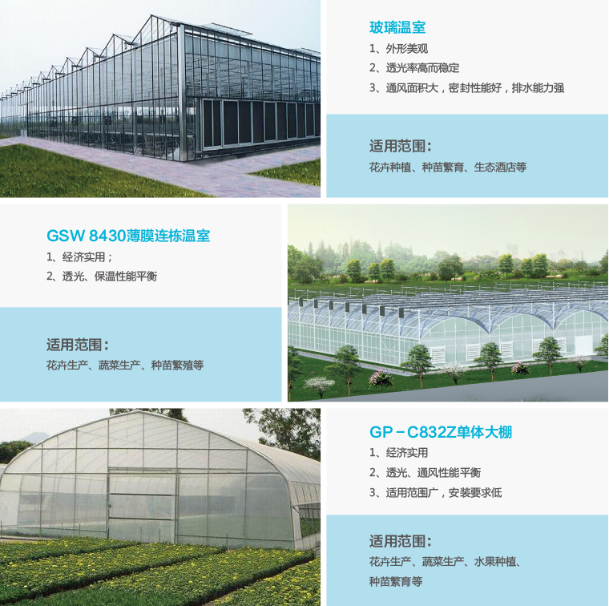
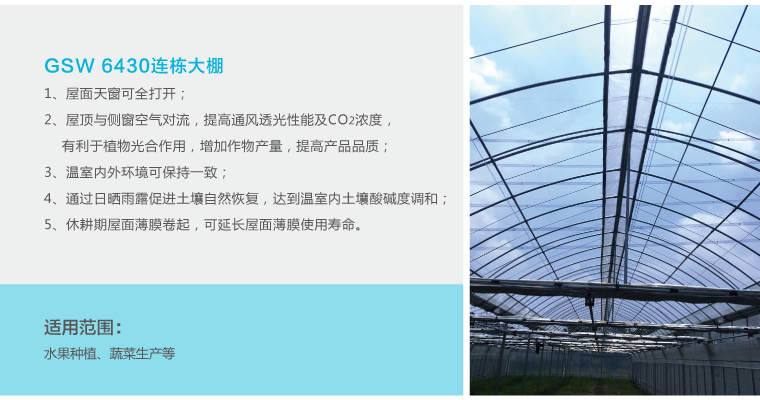
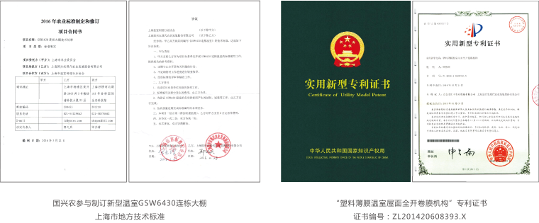
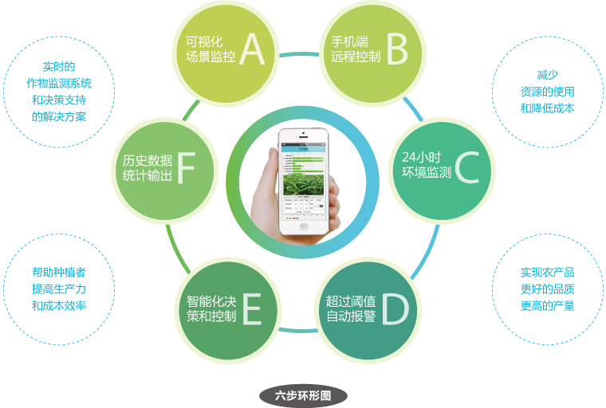
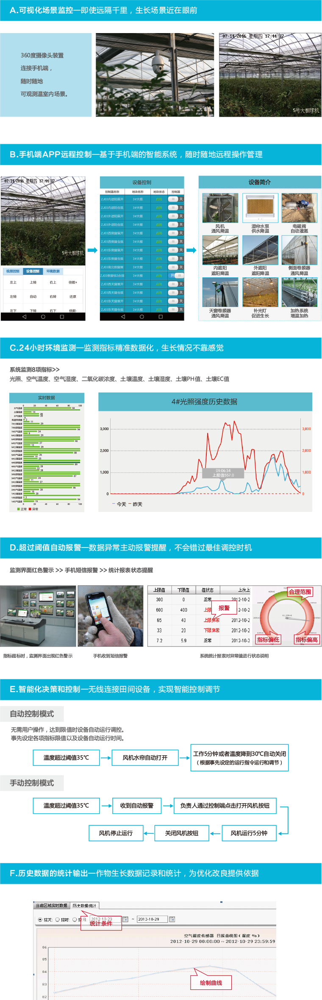
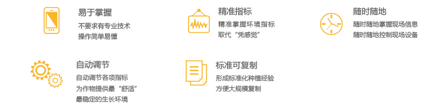
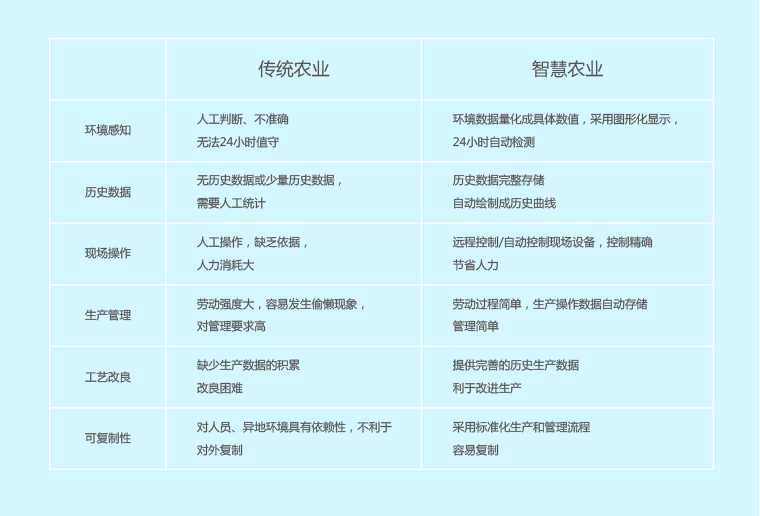

关于智兴农
智兴农——基于物联网和移动互联网技术，实现精准种植，标准生产，智能管理
智兴农运用物联网技术实现农产品生长环境实时感知、数据自动统计、设备远程控制、设备自动控制、自动报警、视频监控、数据采集等。 重点针对作物最敏感的温度水分控制提供“温控”和“自动灌溉”，达到种植过程的数字化和智能化。
智兴农——减少人工、降低品质和产量
智兴农将物联网技术与农业设施设备有效集成并深度融合，能够为农业生产主体提供全套的智慧农业系统的建设并实现应用手机 APP系统即可控制农业生产设施设备，主要包括智能温室控制、水肥一体化及自动化。
通过自动化控制系统，能够对环境进行检测，实现自动化控制，有效地提高劳动率，从而节约大量的人工成本； 通过国兴农水肥一体化技术的应用，提高化肥农药的利用率，从而达到减少化肥农药的使用，有效的保护生态环境
智兴农——全面参与上海市科技兴农项目
目前，智兴农连续三年承担市科技兴农项目：种植标准化及数字化，智慧农业系统，作物生长模型。
智能温室-营造作物最适宜的生长环境
将智能化控制系统应用到大棚种植上，利用先进的生物模拟技术，模拟出适合棚内植物生长的环境， 采用温度、湿度、CO2、光照度传感器等感知大棚的各项环境指标，并通过后台进行数据分析， 对棚内的水帘、风机、遮阳板等设施实施监控，从而改变大棚内生物的生长环境。
智能温室类型
  水肥一体化——降低资源消耗，提高品质产量
水肥一体化可实现精准的营养和水分管理
水肥一体化技术是通过灌溉系统不断地把植物所需的营养成分以液体的方式进行均匀施肥。水分和养分将会直接输送到作物的有效根系周围
与传统的先撒肥后灌溉的耕作方式相比，水肥一体化技术可：
手机智能控制—实时监测和管理农作物
如何实时获取作物状况，实现始终保持最佳参数？
 选择智兴农的理由—智慧农业管理方案易于推广
智慧农业VS传统农业
 